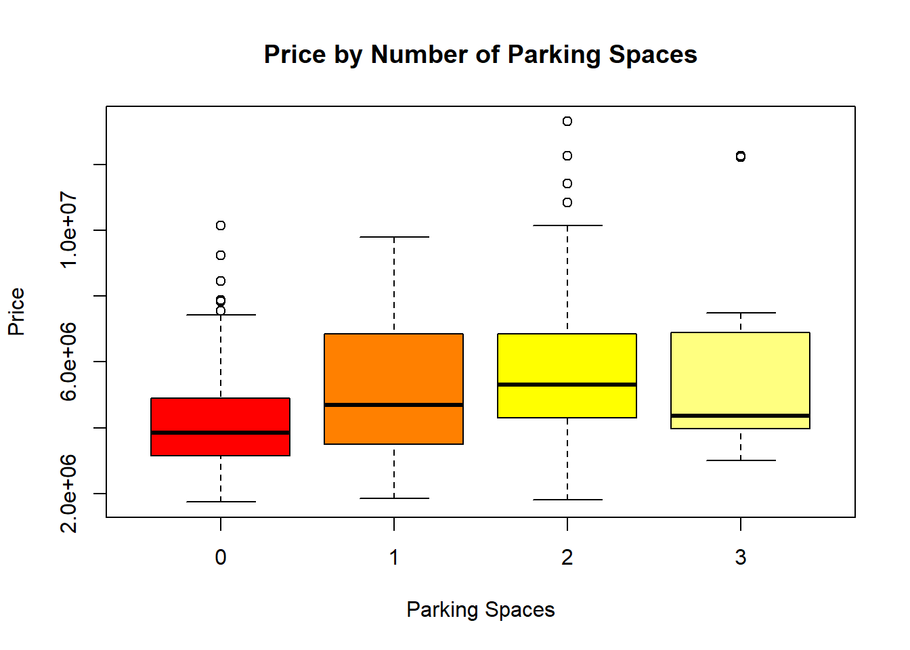
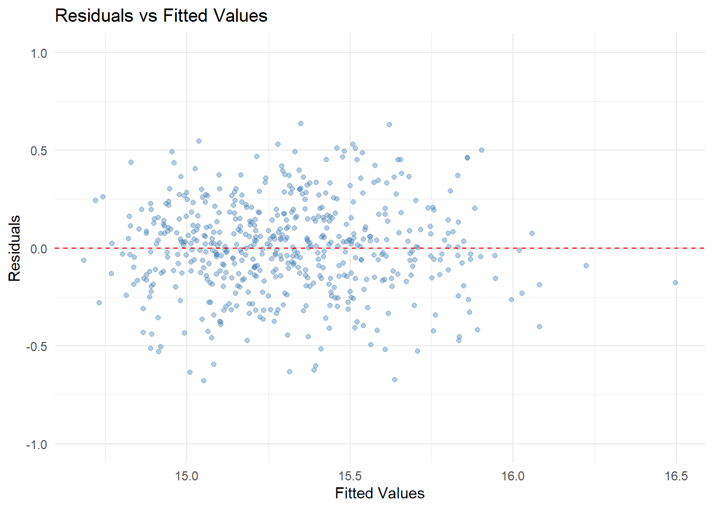

Analysis
Here we provide a detailed analysis using more sophisticated statistics techniques.
This comes from the file analysis.qmd.
Dataset 1 - Analysis
Motivation
The main purpose of the study is to examine the racial disparities in land ownership. The importance of distinguishing between urban and rural residential properties provides insight for analyzing ownership patterns, housing distribution, and land usage across different demographic groups. Historically, the American segregational economic policy has confined minority groups into urban areas, limiting their ability to acquire larger sets of land. By comparing the distribution between land and characteristics of homeownership, the result can help to identify the factors that are major contributors to generational wealth, therefore enhancing the understanding and influence of the racial wealth gap.
Data Source
This analysis is based on microdata from the IPUMS USA 2023 American Community Survey (ACS, 1-Year Sample), accessed via the IPUMS extract system. The dataset includes household-level demographic and housing characteristics, harmonized for research purposes.
Urban vs. Rural Housing Value
The boxplot below illustrates housing values across racial groups, separated by urban and rural locations. It reveals that Asian households living in urban areas tend to occupy the highest-value homes, whereas American Indian and Black homeowners have more limited value ranges, especially in rural settings. This reinforces how geography and race intersect to shape home equity.
Research Questions
- How does homeownership and racial demographics interact with housing prices?
- Does the association between housing quality and rent price vary by racial differences in neighborhood?
How does homeownership and racial demographics interact with housing prices?

Note: Each bar represents the distribution of house value tiers within each racial group, not across the full sample. This controls for unequal population sizes across races.
Overview
The stacked bar chart displays, for each racial group, the percentage distribution of owned homes across three housing value tiers: Low (≤$100K), Medium ($100K–$300K), and High (>$300K). Each bar adds up to 100%, emphasizing how the composition of housing wealth differs within each racial category of homeowners. This visualization highlights disparities in access to high-value housing across racial lines.
Geographic Disparities in Housing Value
The housing market varies not only by race and income but also by geography. To visualize spatial inequality, we present maps of average housing value and racial disparities across U.S. states.
Average Housing Value by State

This choropleth map shows the average housing value by state. We observe that housing values are generally higher in coastal regions—particularly in California and parts of the Northeast. In contrast, much of the Midwest and South exhibit lower average home values, reflecting broader geographic disparities in real estate markets.
Racial Gap in Average Housing Value
This map shows the average difference in housing values between White and Black homeowners across U.S. states. Positive values (shaded in yellow and orange) indicate that homes owned by White individuals are more valuable on average than those owned by Black individuals. States like Texas and Florida exhibit large positive gaps, while a few Northeastern states show small negative gaps. The variation highlights persistent racial disparities in housing wealth shaped by historical, geographic, and socioeconomic factors.
Comparing the two maps reveals that high average housing values do not necessarily correlate with large racial disparities. For example, California stands out with the highest average housing value, yet its racial value gap is also among the largest. In contrast, some Midwestern states have moderate home values but relatively small racial differences.
Interaction between Homeownership, Race, and Housing Prices
Homeownership does not reflect racial equity. Asian homeowners are concentrated in high-value homes while Black and American-Indian homeowners are clustered in the lower-value segments, reflecting the racial wealth gap.
Affordability Burden by Race
To further examine the relationship between home value and income, the boxplot below presents the affordability ratio—calculated as housing value divided by household income—by racial group. Notably, Asian homeowners exhibit the highest median affordability ratio (3.82), suggesting they carry the greatest relative cost burden despite owning more high-value homes. In contrast, White and American Indian households show lower median ratios, indicating relatively lower cost pressure even when housing prices vary across groups.
Modeling and Inference
To examine how income, race, and location affect home values, we fit a multiple log-linear regression model using VALUEH (housing value) as the dependent variable. The key explanatory variables include logged income (log(FTOTINC)), race (factor(RACE)), and location type (factor(ACREHOUS), >10 acres indicator).
Key Predictors
In addition to log household income, we include two categorical variables: race and house acreage. The race variable captures demographic differences across racial groups using dummy indicators. The ACREHOUS variable indicates whether the property has more than 10 acres of land, which may reflect rural-style housing or large-lot ownership, potentially influencing home value independently of income. #### Model and Predictor Selection Rationale
The decision to use a multiple log-log regression model stems from both the nature of the data and the economic interpretation desired. Housing values (VALUEH) and household income (FTOTINC) are both highly skewed, which can distort linear model assumptions. Taking the logarithm of these variables helps normalize the distributions, reduce heteroskedasticity, and allows the coefficients to be interpreted as elasticities—that is, percentage changes in housing value associated with percentage changes in income.
The predictor variables were chosen based on theoretical relevance and empirical patterns:
- log(FTOTINC): Income is a fundamental driver of housing demand. Logging this variable improves model fit and enables percentage-based interpretation.
- RACE (factor): Racial disparities in housing access and value have been widely documented. Including race as a categorical predictor allows the model to measure differences in home value across demographic groups, even after adjusting for income.
- ACREHOUS (factor): The acreage indicator (whether a home sits on more than 10 acres) captures a meaningful dimension of housing context, land use, and market segmentation.
This combination of variables aims to balance parsimony with interpretability, providing insights into both economic and structural determinants of housing value while avoiding unnecessary model complexity or overfitting.
Model Specification
We estimate the following log-log model:
\[ \log(\text{VALUEH}_i) = \beta_0 + \beta_1 \log(\text{FTOTINC}_i) + \gamma \cdot \text{RACE}_i + \delta \cdot \text{ACREHOUS}_i + \varepsilon_i \]
This specification captures the elasticity of income, racial differences, and the premium (or discount) associated with owning more than 10 acres of land.
Key Results
| Variable | Estimate | Interpretation |
|---|---|---|
| log(FTOTINC) | 0.438 | A 1% increase in income is associated with a 0.44% increase in housing value. |
| Black/African American | -0.158 | Homes owned by Black households are on average ~15.8% less valuable than those of White households. |
| American Indian or Alaska Native | -0.423 | Homes owned by American Indian/Alaska Native households are ~34.4% less valuable than White households. |
| Chinese | 0.702 | Chinese households own homes that are ~101% more valuable than White households. |
| Japanese | 0.732 | Japanese households own homes ~109% more valuable than White households. |
| Other Asian or Pacific Islander | 0.421 | These households own homes ~52.3% more valuable than White households. |
| Other race, nec | 0.017 | Slightly higher, but economically negligible difference vs. White households. |
| Two major races | 0.059 | Homes owned by two-race households are ~6.1% more valuable than those of White households. |
| Three or more major races | 0.261 | Households identifying with three or more races own homes ~29.8% more valuable. |
| Acreage > 10 acres (vs ≤10 acres) | -0.031 | Homes on large plots (>10 acres) are about 3.1% less valuable, holding other factors constant. |
Model fit: R² = 0.1673 (adj. R² = 0.1672). Although income, race, and land size significantly predict housing value, the modest R² indicates that important housing features and geographic context—such as neighborhood characteristics or housing quality—are likely needed to better explain variation in home values.
To interpret the coefficients as percent changes: \[ \% \text{Change} = (e^{\beta} - 1) \times 100 \]
Interpretation
Income remains a strong predictor of housing value, but racial differences persist even after adjusting for financial status. For instance, Black and American Indian households own significantly lower-valued homes than Whites with the same income. Conversely, several Asian subgroups show significantly higher valuations.
This reinforces the idea that systemic disparities in housing markets are not merely economic, but also tied to demographic and geographic inequities.
Model Diagnostics
Residuals vs Fitted (Hexbin)
The residual plot using hexbin visualization shows a dense cluster of observations centered near zero residuals, particularly concentrated around fitted values between 12 and 13. This pattern suggests that the model is reasonably well specified for the bulk of the data. Although no strong curvature is observed, there is some mild funneling—wider spread at lower fitted values—which may hint at mild heteroskedasticity. Nonetheless, the overall structure supports the assumptions of linearity and approximate constant variance for most observations.
Limitations and Assumptions
While the multiple regression model includes income, race, and land acreage, it still has several limitations:
- Omitted Variable Bias: Important housing characteristics (e.g., square footage, number of bedrooms, building age, neighborhood amenities, proximity to jobs/schools) are not included in the model. These omitted factors are likely correlated with both income and race, and may confound the estimated effects.
- Measurement Error: Both
VALUEHandFTOTINCmay be subject to reporting error or top-coding in survey data, especially in the upper tail, which could attenuate the estimated relationships. - Simplified Geographic Controls: While the model could incorporate state fixed effects (
STATEICP) to control for regional heterogeneity, our base specification only includes a coarse land classification (ACREHOUS) indicating whether a property exceeds 10 acres. This binary indicator does not fully capture urban–suburban–rural differences or local housing market dynamics. - Linearity and Constant Variance Assumptions: Although diagnostics suggest reasonable model fit, some residual heteroskedasticity remains. This suggests that relationships may be nonlinear or vary across subgroups.
Future Extensions
A more complete model would include richer housing attributes (e.g., lot size, building condition, year built), as well as finer geographic controls (e.g., ZIP code, county, census tract). Including state fixed effects via factor(STATEICP) would better control for unobserved regional differences. It would also be informative to explore interaction terms, such as income × race, to test whether income translates into home value equally across demographic groups. Finally, using panel data or exploiting quasi-experimental variation could help uncover causal rather than associative relationships.
Overall Analysis
This study reveals a clear racial divide in homeownership patterns across the U.S. While Asian homeowners are disproportionately represented in the high-value tier, Black and American Indian homeowners are more often found in the lower or medium tiers. These disparities persist geographically, with some states showing both high average home values and large racial gaps. Affordability burdens further highlight inequality, as groups with higher-valued homes also bear heavier income-to-value ratios.
Although the model shows that income, race, and land acreage significantly affect housing values, these variables explain only part of the variation. The regression results suggest that deeper structural differences—such as housing quality, local amenities, neighborhood segregation, or zoning policy—are likely at play. Future models incorporating additional housing attributes and interaction terms (e.g., income × race, income × region) will be essential for a more comprehensive understanding of equity in housing wealth.
Dataset 2 - Analysis
Motivation & Research Questions
Home prices have surged, yet buyers and policymakers still debate why some properties cost millions more than others. This study investigates three broad hypotheses: - Size‐driven pricing – Larger built‑up area should raise price, but by how much? - Amenity premiums – Features such as furnishing, bathrooms, parking, and extra stories may command additional value. - Independence of effects – Do those features each add value on their own, or are some simply proxies for one another (multicollinearity)?
Answering these helps buyers budget efficiently and lets developers prioritise high‑value upgrades.
Exploratory Data Analysis (EDA)
Area and Price
What we see: Price rises with area, but the cloud gets wider at larger sizes. That “fan‑shape” warns that area alone is far from sufficient; luxury fit‑outs and location are also at play.
Furnishing Status
Furnished homes cluster at the top of the price spectrum, semi‑furnished sit in the middle, and unfurnished trail behind. The median gap between furnished and unfurnished units is roughly two million (local currency), hinting at a strong convenience premium.
Bedrooms
Median price increases steadily from one to five bedrooms, but dispersion within each group is large—evidence that bedroom count alone doesn’t guarantee luxury. For example, some three‑bedroom flats fetch more than four‑bedroom houses because of high‑end finishes.
Parking

Going from zero to one parking space lifts the median price by ≈ 15 %. A second space still adds value, but the incremental gain diminishes—suggesting diminishing marginal utility.
Correlation Check
Correlations among predictors stay below 0.60. That is low enough to keep variance‑inflation factors (VIF) below 2, so we can include all variables in one regression without worrying about unstable coefficients.
Statistical Modeling
Why a log‑log model?
- Heteroskedasticity: Raw prices show larger spread at higher values. Logging price and area pulls variances into roughly constant range.
- Interpretability: Coefficients on logged variables read as elasticities—handy for business decisions.
The log-log transformation reveals a near-linear trend, suggesting that a constant elasticity model is appropriate for capturing the relationship between area and price.
Model Diagnostics
Residuals vs Fitted Plot

The residuals are roughly symmetrically distributed around zero, with no visible curvature or fan-shaped patterns. This supports the assumption of linearity and homoskedasticity. A small spread (within ±1) indicates a tight fit between predicted and observed log-prices.
Q-Q Plot
The Q-Q plot of residuals shows that most residuals lie along the 45-degree reference line, indicating approximate normality. Minor deviation at the tails is expected and does not severely violate model assumptions.
Overall, these diagnostics suggest that the multiple linear regression model is well-specified and suitable for inference.
Model specification
\[
\log(\text{price}) = \beta_0 + \beta_1 \log(\text{area}) + \beta_2 \cdot \text{bedrooms} + \beta_3 \cdot \text{bathrooms} + \beta_4 \cdot \text{stories} + \beta_5 \cdot \text{parking} + \beta_6 \cdot \text{semi-furnished} + \beta_7 \cdot \text{unfurnished} + \varepsilon
\] Baseline furnishing category = “furnished”.
Robust (Huber–White) standard errors are used to guard against possible heteroskedasticity. A Durbin–Watson statistic of 1.18 suggests mild residual autocorrelation, although the model is not time-series in nature.
Key results (robust SEs)
| Variable | β̂ | % impact | 95 % CI | Comment |
|---|---|---|---|---|
| log(area) | 0.39 | +0.39 % per +1 % | 0.34–0.45 | Size matters, but less than proportional. |
| Bedrooms | 0.04 | +4 % per room | 0.01–0.07 | Small yet significant. |
| Bathrooms | 0.18 | +20 % per bath | 0.14–0.23 | Largest single‑room effect. |
| Stories | 0.10 | +11 % per floor | 0.08–0.13 | Two‑storey vs. one‑storey ≈ 11 % uplift. |
| Parking | 0.05 | +5 % per spot | 0.03–0.08 | Still valuable after controls. |
| Semi‑furnished | –0.02 | –2 % | –0.07–0.03 | Not distinguishable from furnished. |
| Unfurnished | –0.17 | –15 % | –0.22– –0.11 | Clear discount. |
Model fit: R² = 0.60 (adj. R² = 0.60). VIF all < 1.7, confirming low multicollinearity.
Interpretation
- Elastic size premium: Doubling floor area (+100 %) raises price by ~ 31 % (because 1.00×0.39 = 0.39; e^0.39 ≈ 1.48). Returns to scale are therefore diminishing.
- Quality of living spaces: One extra bathroom is worth roughly five bedrooms (20 % vs. 4 %). Developers looking for affordable upgrades should prioritise bathroom count.
- Furnishing’s impact: Being unfurnished strips ~15 % off value, whereas “semi‑furnished” is statistically on par with “furnished.”
- Parking spots: Each additional space fetches about 5 % more, in line with urban planners’ estimates of parking scarcity premiums.
Limitations and Assumptions
- Missing Fine-Grained Geographic Controls: The dataset lacks latitude/longitude or neighborhood-level identifiers (e.g., ZIP codes), limiting the ability to control for local housing market effects. As a result, some estimated coefficients may inadvertently capture unobserved neighborhood quality.
- Cross-Sectional Data: The dataset represents a single point in time, ignoring temporal dynamics in housing markets. Without panel data, we cannot account for market cycles or unobserved household characteristics via fixed effects or repeat-sales models.
- Coarse Variable Definitions: Variables like
furnishingstatusare coarse and categorical; they do not capture within-category heterogeneity (e.g., luxury vs. basic furniture), potentially understating their influence. - Model Assumptions: The Durbin–Watson statistic < 2 indicates potential residual autocorrelation, which violates the OLS assumption of independent errors. Although robust standard errors are used, more advanced techniques (e.g., clustering by region or mixed-effects models) may yield more reliable inference.
Future Directions
To deepen the analysis of housing price determinants, future work could incorporate more granular location identifiers (e.g., ZIP code, district) to control for local market variation and neighborhood effects. Including additional structural attributes such as year built, renovation status, or energy efficiency could improve explanatory power and reduce omitted variable bias.
Moreover, interaction terms (e.g., log(area) × furnishing status, or bedrooms × stories) could help detect nonlinearities and conditional effects. To address potential residual correlation across homes within the same neighborhood, multilevel models or clustering by region would enhance statistical robustness.
Finally, if panel data becomes available, fixed-effects models could be used to control for unobserved household or location-specific traits, enabling stronger causal inference about housing value drivers over time.
Cross-Dataset Summary
This project used two complementary datasets to examine determinants of housing value in the United States.
IPUMS: Sociodemographic Disparities
The IPUMS housing dataset highlighted sociodemographic disparities in homeownership and property value. Even after controlling for income, racial differences in housing value remained substantial. Asian subgroups (particularly Chinese and Japanese) owned significantly higher-valued homes, while Black and American Indian households lagged behind, reflecting persistent structural inequalities.
Kaggle: Physical Property Characteristics
The Kaggle housing dataset, on the other hand, emphasized property-specific features like square footage, number of bedrooms, bathrooms, and parking capacity. The correlation heatmap revealed that area and number of bathrooms are most strongly associated with price, suggesting that functional space and comfort play a key role in housing valuation.
Two Sides of the Housing Market
Together, these datasets reveal two sides of the housing market:
- In IPUMS, social identity (race, income) plays a dominant role. It focuses on who owns valuable homes is shaped by race, income, and geography.
- In Kaggle, material characteristics (space, amenities) dominate. It focuses on why homes are valued differently is largely explained by their structural features.
Integrated Interpretation and Future Direction
This side-by-side analysis demonstrates that both who owns valuable homes and why those homes are valued are influenced by distinct yet intersecting factors. Future work could benefit from integrating sociodemographic and physical property data to develop more accurate predictive models and inform equity-driven housing policy.
Although the IPUMS and Kaggle datasets cannot be directly merged due to different structures and identifiers, we were able to conduct a comparative analysis by aligning them through a common outcome variable: housing value.
Key Observations from Each Dataset
In the IPUMS dataset, we found that race significantly influences housing value even after controlling for income—highlighting persistent disparities, with Black and American Indian households typically owning lower-valued homes, and Chinese and Japanese households owning higher-valued ones.
In the Kaggle dataset, housing value was most strongly predicted by physical characteristics, such as total area and number of bathrooms.
Bridging the Datasets
By observing that race affects housing value in one dataset and that housing value is closely tied to home size in the other, we establish an indirect bridge:
racial disparities in housing value may, in part, reflect differences in the size and quality of homes owned across racial groups. This cross-dataset insight suggests that structural inequalities manifest not only in homeownership access but also in the physical conditions of owned properties.
Conclusion
Future studies combining both sociodemographic and structural variables could offer more complete models and inform policies addressing housing equity.
All in all, future work can combine both types of variables to create richer predictive models and more comprehensive policy insights.